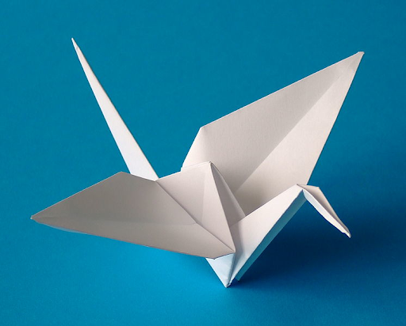
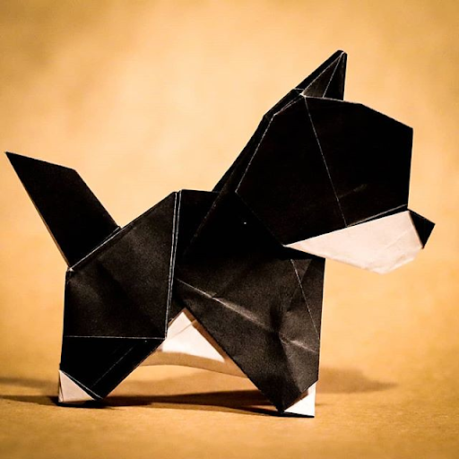
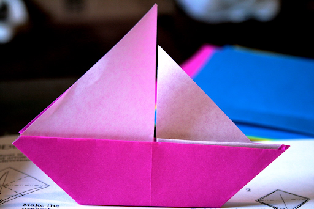
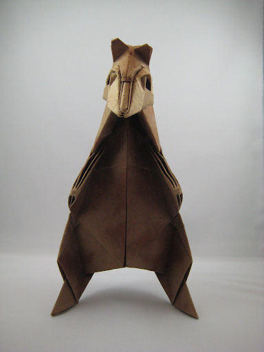
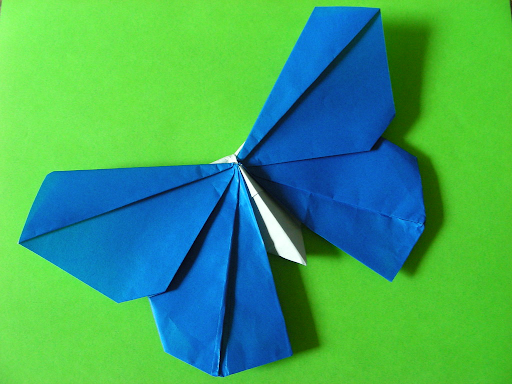
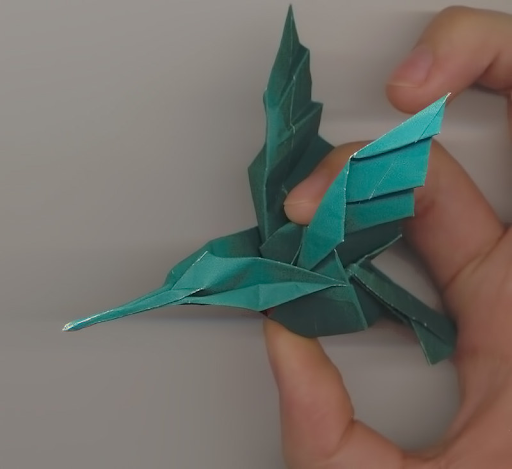
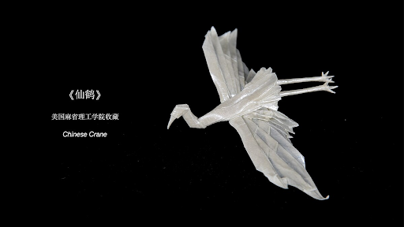
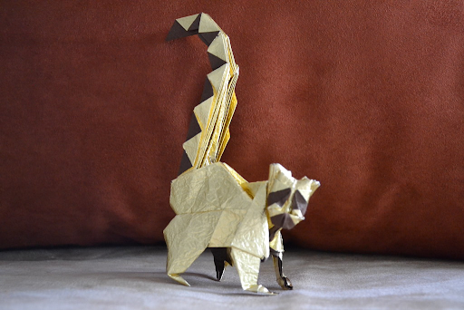
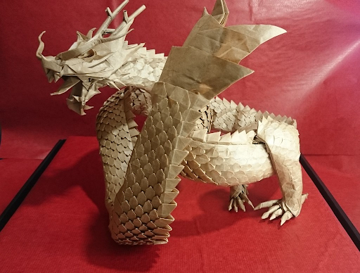

Origami is an extremely old art form, and has evolved into something extraordinary, with all levels of complexity. There are 3 main, distinct levels of complexity in origami: simple, intermediate and complex. As you will be amazed to know, each of these were made from just 1 piece of paper, without any cuts.
The origami crane, the most well known origami model
origami puppy, a more modern origami model
an origami boat, another classic model
The origami spirit bear, known as Kamikuma, with facial details
An origami butterfly, more closely resembling the real creature than the first origami butterfly renditions
An origami hummingbird, containing lots of features of the real bird
The origami crane has gotten an upgrade, complete with legs, proper wings and body, and a more detailed beak.
This adorable origami lemur may not look so complex, but the way the paper is used in the tail makes it look striped, this isn’t made with any paint being used.
Finally, the Ryujin 3.5, praised for being the most complex origami model in existence, complete with thousands of scales, 4 legs each complete with proper talons, and many other intricate details.
